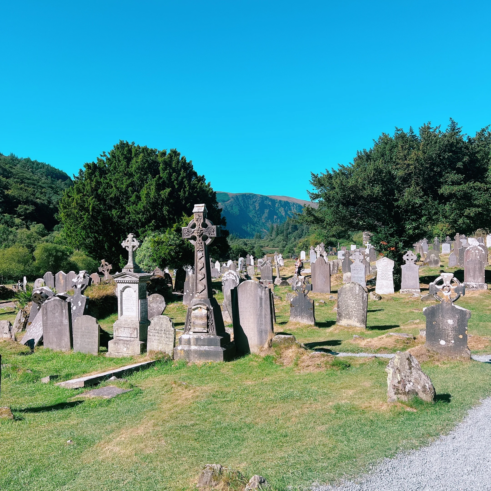

Where to be and when
The tour begins with a Welcome Meeting in London. Your welcome email confirms the hotel and the exact time — aim to arrive with enough time to check in and settle before we start.
🕔 Welcome Meeting
Our first group get-together is in the hotel lobby, ahead of the Welcome Dinner — your welcome email will confirm the exact time.
Before that is your own time — check in, freshen up, have a look around. Just plan to be back in the lobby on time for our group start.
🏨 Hotel check-in
Check-in is typically available from 3:00 PM. If you arrive earlier, most hotels will store your main luggage at reception until your room is ready.
At our London hotel, a Trafalgar Local Host is also on hand — a nice extra if you have questions before the tour gets underway.
🚕 Getting to the hotel
As this tour starts in London, there are no group airport transfers laid on for Day 1 — you'll make your own way to the hotel, whether that's by taxi, train or however suits you best.
Keep your hotel address, booking details, passport and phone easily accessible on travel day.
What stays with you
One habit makes travel days much easier: keep the important things in your day bag, not your main suitcase.
🛂 Passport & travel documents
Know where your passport is at all times, and keep it with you — not packed in your main suitcase — on the day we cross the Irish Sea by ferry.
It is also good habit to carry some form of ID on your person day to day: passport, national ID card or driving licence all work.
✅ Day bag essentials
Your main suitcase goes into the coach hold on travel days and may not be accessible until you reach the hotel. Keep anything you might need during the day with you:
- Glasses, contact lenses or hearing aids
- Medication and prescription items
- Phone, charger and any cables
- Cards, cash and travel money
- A waterproof layer — useful in England, Wales, Ireland and Scotland alike
A useful rule: if you would miss it for a few hours, it belongs in your day bag.

Before you pack
These are the details that tend to make the biggest practical difference.
👟 Walking shoes
Stonehenge, Bath's Georgian streets, Blarney Castle's grounds, stops along the Ring of Kerry, Edinburgh's Old Town, York's city walls — this tour covers a lot of ground on foot across four countries.
Comfortable, well-worn shoes make a genuine difference. If you are unsure which pair to bring, bring your most comfortable ones.
🌦️ Weather and layers
England, Wales, Ireland and Scotland can all deliver very different weather on the same day, let alone across a 12-day loop. Rain, sun and wind can all show up within the same afternoon.
A waterproof jacket you trust, a mid-layer, and comfortable shoes will do most of the heavy lifting. Forecasts are useful but treat them as a guide rather than a guarantee.
🔌 Power adapters
England, Wales, Scotland and Ireland all use the same UK Type G plug — one adapter covers the entire tour, no need to think about it country by country.
🧳 Packing
Pack for usefulness rather than volume. With a hotel change most days across this route, lighter luggage is noticeably easier to live with.
We use audio listening devices on walking tours — disposable wired headphones are provided. These are not Bluetooth, so wireless earbuds will not connect. You are welcome to bring your own wired pair if you prefer.
The rhythm of it
This is a loop rather than a one-way trip — London to London, twelve days, four countries. Stonehenge and Bath ease us out of the city, before Cardiff and Wales lead us to the coast for a ferry crossing of the Irish Sea into Ireland.
Ireland brings Waterford, Blarney Castle, the Rock of Cashel and a scenic drive around the Ring of Kerry, before Dublin and a ferry back across to Britain. From there we head north through Gretna Green to Edinburgh, then south again via York, the Lake District and Alnwick.
The final stretch brings us back through Stratford-upon-Avon, Oxford and Bladon — Sir Winston Churchill's resting place — before returning to London to close the loop.
This is a leisurely-paced tour by design — there's a lot of ground to cover, but the itinerary is built to give you time to actually take each place in, not just tick it off.
I'll always let you know what's coming up, what to bring for the day, and anything worth knowing before we set off.
🚌 On the coach
Seat rotation happens daily, and I'll explain the system clearly on Day One.
Snacks are absolutely fine. Just avoid hot food, hot drinks and anything likely to melt, spill or perfume the entire coach by lunchtime. Please keep your seat area tidy — it's a shared space and it makes a real difference to everyone's day.
On the day of our ferry crossing between Wales and Ireland, keep your day bag with you and a layer handy for time on deck.
Seatbelts on whenever you are seated — it's a simple habit that matters.
🏨 Hotels vary
Across four countries, hotels range from modern city properties to smaller, more traditional stays — that variety is part of the character of a trip like this.
Keep your passport, cards and valuables secure and close to you, particularly in busier city centres like London, Dublin and Edinburgh. A small bag that stays close to your body is worth considering on busier sightseeing days.
🚗 Our Driver
Our Driver navigates a genuinely varied route — motorways, coastal roads, a ferry crossing and city centres across four countries all take real skill.
By the end of the tour, most groups have a real appreciation for just how much goes into it.
⏰ Tour timings & inclusions
Our days run to a schedule. Being ready on time — for departures, meals and activities — keeps things on track for everyone in the group.
I'll always let you know what's coming up and what to be prepared for. All we ask is that you're there on time, ready to go.
I use WhatsApp for simple reminders and day-to-day updates while we are travelling. It is optional, but it usually makes the small daily details easier.
- 1Download and set up WhatsApp before you travel if you do not already use it. Download WhatsApp
- 2Save my number — it is in your welcome email, or use the WhatsApp link at the top of this page.
- 3Send me a message with your name so I know you are set up.
If you'd rather not use WhatsApp, that's fine — everything important will still reach you.
A few practical things for later
You do not need to make all of these decisions before we meet. They become much easier once you can see the pace of the tour and what suits you.
⭐ Optional experiences
This tour includes an enormous amount as standard — Stonehenge, the Roman Baths in Bath, Blarney Castle, the Rock of Cashel, a scenic drive around the Ring of Kerry, Edinburgh Castle, York Minster and Shakespeare's Birthplace in Stratford-upon-Avon are all part of the itinerary, not add-ons. Alongside all of that, there's usually a small selection of Optional Experiences to personalise the trip further.
I'll walk you through what's available once we're together, based on the specific departure. My honest advice on optionals, wherever they come up: unless something really doesn't appeal to you, do it. I've been travelling most of my life, and the times I've passed on something — thinking it was too expensive, or I'd come back another day — those are the ones I still think about.
💳 Money & cards
Cards are widely accepted, but a small amount of cash can still be useful for smaller cafes, markets, local purchases or leaving tips.
England, Wales and Scotland use Pounds Sterling (GBP), while the Republic of Ireland uses the Euro (EUR). You will cross between the two currency zones during the tour — small ATM withdrawals as you go are usually simpler than carrying large amounts of both from home.
💶 Gratuities
When you're out during free time, if the service is good — tip. A few pounds or euros at the end of a good meal is always appreciated.
On the tour itself, porterage and restaurant tips on included meals are already taken care of. Tips for your Travel Director and Driver are separate unless you've pre-paid through Trafalgar. Local Specialists — the guides who join us in London, Cardiff, Dublin, Edinburgh and elsewhere — are separate again. Good ones are hard to find, and a small tip at the end of their time with the group is customary and well received.
Guidance on suggested amounts is in your Trafalgar documents, and you can always ask me on tour. This does not need to be solved on the first morning.
Questions before we begin?
Save my contact now, and keep your official joining instructions somewhere easy to find. That is enough for the moment.
Damian Watson
Travel Director · Trafalgar
Phone / WhatsApp
WhatsApp is usually the easiest way to reach me during the trip.
Urgent before departure?
Before the tour begins, I may occasionally be travelling or finishing another tour, but I will always get back to you as soon as I can.
For anything time-sensitive before Day 1, Trafalgar's European Guest Services team is there to help: EuropeanGuestServices@ttc.com or +44 207 620 8900.
Once we are together, things usually become much more straightforward day to day.

Final note
London back to London, by way of Stonehenge, Wales, Ireland's Ring of Kerry, Edinburgh and Shakespeare's Stratford — there's a huge amount of Britain and Ireland ahead of us, and I'm looking forward to every part of it. See you in London.